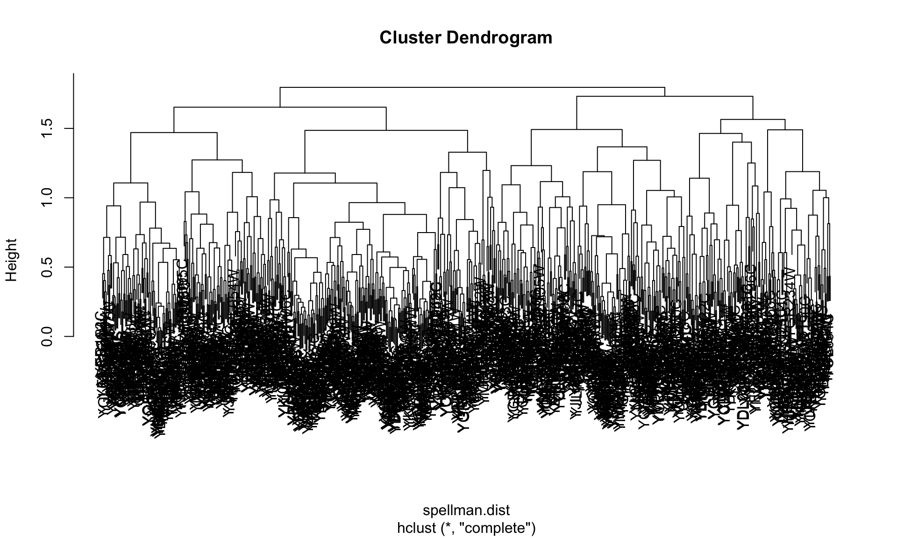
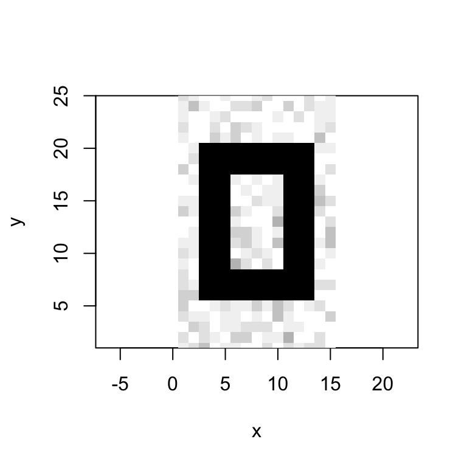

Chapter 16 ANOVA
16.1 Libraries
library(tidyverse)
library(cowplot)
library(broom)
library(magrittr)16.2 Example data set: The effect of light treatments on circadian rhythms
Whitlock & Schluter (Analysis of Biological Data) describe an examplar data set from a study designed to test the effects of light treatment on circadian rhythms (see Whitlock & Schluter, Example 15.1).
The investigators randomly assigned 22 individuals to one of three treatment groups and measured phase shifts in melatonin production. The treatment groups were:
- control group (8 individuals)
- light applied on the back of the knee (7 individuals)
- light applied to the eyes (7 individuals)
These data are available at: ABD-circadian-rythms.csv
circadian <- read_csv("https://raw.githubusercontent.com/bio304-class/bio304-fall2017/master/datasets/ABD-circadian-rythms.csv")The data set has two columns, treatment and shift. treatment is a categorical variable indicating the particular light treatment that each individual received; shift is the measured phase shift in circadian cycles.
head(circadian)
# A tibble: 6 x 2
treatment shift
<chr> <dbl>
1 control 0.5300
2 control 0.3600
3 control 0.2000
4 control -0.3700
5 control -0.6000
6 control -0.640016.3 Visualizing the data
As we usually do, let’s start by visualizing the data. We’ll create a plot depicting the observations (as points), colored by treatment group, along with a set of vertical lines that indicate how an individual observation differs from the overall mean of the data.
# pre-compute grand mean because we'll be using it repeatedly
grand.mean <- mean(circadian$shift)
total.plot <-
circadian %>%
ggplot(aes(x=treatment, y=shift,
color=treatment, group=row.names(circadian))) +
geom_hline(yintercept = grand.mean, linetype='dashed') +
geom_point(position = position_dodge(0.5)) +
geom_linerange(aes(ymin = grand.mean, ymax = shift),
position = position_dodge(0.5)) +
ylim(-3,1) +
labs(x = "Treatment", y = "Phase shift (h)",
title = "Deviation of observations around the grand mean (dashed line)") +
theme(plot.title = element_text(size=9))
total.plot
16.4 Analysis of Variance
\(t\)-tests are the standard approach for comparing means between two groups. When you want to compare means between more than two groups the standard approach is “Analysis of Variance” (ANOVA).
16.4.1 Hypotheses for ANOVA
When using ANOVA to compare means, the null and alternative hypotheses are:
- \(H_0\): The means of all the groups are equal
- \(H_A\): At least one of the means is different from the others
16.4.2 ANOVA, assumptions
ANOVA assumes:
- The measurements in every group represent a random sample from the corresponding population
- The varaible of interest is normally distributed
- The variance is approximately the same in all the groups
16.4.3 ANOVA, key idea
The key idea behind ANOVA is that:
If the observations in each group are drawn from populations with equal means (and variances) then the variation between group means should be similar to the inter-individual variation within groups.
The test statistic used in ANOVA is designated \(F\), and is based on the ratio of two measures of variance, the “group mean square deviation” (\(\text{MS}_\text{groups}\); measures between group variance) and the “error mean square deviation” (\(\text{MS}_\text{error}\); measures within group variance):
\[ F = \frac{\text{MS}_\text{group}}{\text{MS}_\text{error}} \]
Under the null hypothesis, the between group and within group variances are similar and thus the \(F\) statistic should be approximately 1.
Large values of the \(F\)-statistic means that the between group variance exceeds the within group variance, indicating that at least one of the means is different from the others
16.4.4 Partioning of sum of squares
Another way to think about ANOVA is as a “partitioning of variance”. The total variance among all the individuals across groups can be decomposed into:
- variance of the group means around the “grand mean”
- variance of individuals around the group means.
However, rather than using variance we use sums of square deviations around the respectives means (usually shortened to “sums of squares”).
16.5 The aov function
As you would suspect, there is a built in R function to carry out ANOVA. This function is designated aov(). aov takes a formula style argument where the variable of interest is on the left, and the grouping variable indicated on the right.
anova.circadian <- aov(shift ~ treatment, data = circadian)The summary function applied to the aov fit will print out a typical ANOVA table and calculate the associated P-value for the \(F\) test statistic:
summary(anova.circadian)
Df Sum Sq Mean Sq F value Pr(>F)
treatment 2 7.224 3.612 7.289 0.00447 **
Residuals 19 9.415 0.496
---
Signif. codes: 0 '***' 0.001 '**' 0.01 '*' 0.05 '.' 0.1 ' ' 1If you want the ANOVA table in a form you can compute with, the broom::tidy function comes in handy:
tidy(anova.circadian)
term df sumsq meansq statistic p.value
1 treatment 2 7.224492 3.6122459 7.289449 0.004472271
2 Residuals 19 9.415345 0.4955445 NA NA16.6 ANOVA calculations: Step-by-step
The aov() function carries out all the ANOVA calculations behind the scenes. It’s useful to pull back the curtain and see how the various quantities are calculated.
16.6.1 Total sum of squares
We call the sum of the squared deviations around the grand mean the “total sum of sqaures” (\(SS_\text{total}\)).
# total sum of squares
total.table <-
circadian %>%
summarize(sum.squares = sum((shift - grand.mean)**2),
df = n() - 1)
total.table
# A tibble: 1 x 2
sum.squares df
<dbl> <dbl>
1 16.64 21.In vector terms, \(SS_\text{total}\) is simply the squared length of the mean centered vector, which is easily calculated using the dot product:
shift.ctrd <- circadian$shift - mean(circadian$shift)
sum.squares.total <- shift.ctrd %*% shift.ctrd
sum.squares.total
[,1]
[1,] 16.6398416.6.2 Group sum of squares and mean square
Next we turn to variation of the group means around the grand mean. We use group_by and summarize to calculates group means and the group deviates (the difference between the group means and the grand mean):
group.df <-
circadian %>%
group_by(treatment) %>%
summarize(n = n(),
group.mean = mean(shift),
grand.mean = grand.mean,
group.deviates = group.mean - grand.mean)Let’s visualize the difference of the group means from the grand mean:
group.plot <-
group.df %>%
ggplot(aes(x = treatment, y = group.mean, color=treatment)) +
geom_linerange(aes(ymin = grand.mean, ymax = group.mean), size=2) +
geom_point(size = 3, alpha = 0.25) +
geom_hline(yintercept = grand.mean, linetype='dashed') +
ylim(-3,1) +
labs(x = "Treatment", y = "Phase shift (h)",
title = "Deviation of group means around the grand mean") +
theme(plot.title = element_text(size=9))
group.plot
Now we calculate the group sum of squares (\(SS_\text{group}\)) and the group mean square (\(MS_\text{group}\)). This calculation takes into account the size of each group (for the group sum of squares) and the degrees of freedom associated with the number of groups (for the group mean square).
group.table <-
group.df %>%
summarize(SS = sum(n * group.deviates**2),
k = n(),
df = k-1,
MS = SS/df)16.6.3 Error sum of squares and mean square
Next we turn to variation of the individual observations around the group means, which is the basis of the error sum of squares and mean square.
error.df <-
circadian %>%
group_by(treatment) %>%
mutate(group.mean = mean(shift),
error.deviates = shift - group.mean) %>%
summarize(SS = sum(error.deviates**2),
n = n())We can visualize these individual deviates around the group means as so:
error.plot <-
circadian %>%
group_by(treatment) %>%
mutate(group.mean = mean(shift)) %>%
ggplot(aes(x = treatment, y = shift, color = treatment, group=row.names(circadian))) +
geom_point(aes(y = group.mean),size=3,alpha=0.1) +
geom_linerange(aes(ymin = group.mean, ymax = shift), position = position_dodge(0.5)) +
ylim(-3,1) +
labs(x = "Treatment", y = "Phase shift (h)",
title = "Deviation of observations around the groups means") +
theme(plot.title = element_text(size=9))
error.plot
Now we calculate the error sum of squares (\(SS_\text{error}\)) and the error mean square (\(MS_\text{error}\)). Here the degrees of freedom is the total sample size minus the number of groups.
error.table <-
error.df %>%
summarize(SS = sum(SS),
k = n(),
N = sum(n),
df = N - k,
MS = SS/df)16.6.4 Calculating the F-statistic
Having calculated our estimates of between group variance and within group variance (\(MS_\text{group}\) and $MS_) we’re now ready to calculate the \(F\) test statistic.
F.stat <- group.table$MS/error.table$MS
F.stat
[1] 7.28944916.6.5 The F-distribution
Our calculated F statistic is much larger than 1. To calculate the probability of observing an F-statistic this large or greater under the null hypothesis, we can need to examine the F-distribution.
The F-distribution has two degree of freedom parameters, indicating the degrees of freedom associated with the group variance and the degrees of freedom associated with the error variance. Here is an illustration of the F-distribution, \(F_{2,19}\)
f <- seq(0, 10, length.out = 200)
df1 <- 2
df2 <- 19
f.density <- df(f, df1, df2)
ggplot(data_frame(F = f, Density = f.density), aes(x = F, y = Density)) +
geom_line() +
labs(title = "F-distribution with df1=2, df2 = 19")
We can use the F distribution function, pf() to lookup the probability of getting a value of 7.2894487 or larger under the null hypothesis:
# degrees of freedom for group and error sum of squares
df.group <- group.table$df
df.error <- error.table$df
# use the F distribution function
pf(F.stat, df.group, df.error, lower.tail = FALSE)
[1] 0.00447227116.6.6 Critical values of the F-distribution
If we wanted to know what the critical F value is for a corresponding type I error rate we can use the qf() function:
# the critical value of F for alpha = 0.05
qf(0.05, df.group, df.error, lower.tail = FALSE)
[1] 3.52189316.7 Combined visualization
We can combine our three plots created above into a single figure using cowplot::plot_grid:
combined.plot <-plot_grid(total.plot, group.plot, error.plot,
labels = c("A","B","C"), nrow = 1)
combined.plot
16.8 Which pairs of group means are different?
If an ANOVA indicates that at least one of the group means is different than the others, the next question is usually “which pairs are different?”. There are slighly different tests for what are called “planned” versus “unplanned” comparisons. Your textbook discusses the differences between these two types
Here we focus on a common test for unplanned comparisons, called the Tukey Honest Significant Differences test (referred to as the Tukey-Kramer test in your textbook). The Tukey HSD test controls for the “family-wise error rate”, meaning it tries to keep the overall false positive (Type I error) rate at a specified value.
16.8.1 Tukey-Kramer test
The function TukeyHSD implements the Tukey-Kramer test. The input to TukeyHSD is the fit from aov:
TukeyHSD(anova.circadian)
Tukey multiple comparisons of means
95% family-wise confidence level
Fit: aov(formula = shift ~ treatment, data = circadian)
$treatment
diff lwr upr p adj
eyes-control -1.24267857 -2.1682364 -0.3171207 0.0078656
knee-control -0.02696429 -0.9525222 0.8985936 0.9969851
knee-eyes 1.21571429 0.2598022 2.1716263 0.0116776Here again, the broom::tidy function comes in handy:
tidy(TukeyHSD(anova.circadian))
term comparison estimate conf.low conf.high adj.p.value
1 treatment eyes-control -1.24267857 -2.1682364 -0.3171207 0.007865623
2 treatment knee-control -0.02696429 -0.9525222 0.8985936 0.996985102
3 treatment knee-eyes 1.21571429 0.2598022 2.1716263 0.011677556The Tukey HSD test by default give us 95% confidence intervals for the differences in means between each pair of groups, and an associated P-value for the null hypothesis of equal means between pairs. Interpretting the results above, we see that we fail to reject the null hypothesis of equal means for the knee and control treatment groups (i.e. we have no statistical support to conclude they are different). However, we reject the null hypothesis for equality of means between control and eye treatments and between knee and eye treatements. We have evidence that light treatments applied to the eye cause a mean negative shift in the phase of melatonin production relative to control and knee treatment groups.
16.9 ANOVA as Regression
The aov() function we introduced earlier is a wrapper around the lm(). For complex models it can be useful to know how to specify the ANOVA model in the form of a regression. In order to carryout ANOVA using regression, we need to code the group structure in the form of a matrix we can use in the regression.
In lecture we described two simple coding systems – “dummy coding” and “effect coding.” We will illustrate effect coding here. These two websites – UCLA Stats website and USF course on regression – have additional useful information about other methods for constructing coding matrices, and their uses and interpretation.
16.9.1 Treating a variable as a factor
First, we need to make sure our treatment variable is viewed as a factor by R. We’ll create a new column, treatment.factor, to represent this:
circadian <-
circadian %>% mutate(treatment.factor = as.factor(treatment))When you create a factor, R automatically maps the different values of the variable to factor levels:
levels(circadian$treatment.factor)
[1] "control" "eyes" "knee" In the above case, “control” gets mapped to level 1, “eyes” to level 2, etc. #### Changing factor levels
As an aside, if we wanted to change the leveling, the function fct_relevel defined in the forcats package (part of the tidyverse) is useful:
fct_relevel(circadian$treatment.factor,
"eyes", "knee", "control")
[1] control control control control control control control control
[9] knee knee knee knee knee knee knee eyes
[17] eyes eyes eyes eyes eyes eyes
Levels: eyes knee controlNow “eyes” is level 1, “knee” is level 2, etc. Note that fct_level() doesn’t changing the leveling of circadian$treatment.factor itself, but rather returns a new factor with the same values mapped to the new levels.
For our purposes treating the “control” group as the level 1 factor is convenient, so we’ll keep that leveling for now.
16.9.2 Factor coding
Factor variables have a default coding associated with them, corresponding to “dummy coding”. To view this, use the contrasts() function:
contrasts(circadian$treatment.factor)
eyes knee
control 0 0
eyes 1 0
knee 0 1Using dummy coding, when we fit the regression each level of the factor will be compared to the “base level” (the factor with all zeros in the coding matrix).
16.9.3 Fitting the ANOVA using lm
Now that we’ve encoded our grouping variable as a contrast matrix, we can fit the ANOVA using the lm() function:
lm.circadian <- lm(shift ~ treatment.factor, data = circadian)We can then examine information about the model fit:
summary(lm.circadian)
Call:
lm(formula = shift ~ treatment.factor, data = circadian)
Residuals:
Min 1Q Median 3Q Max
-1.27857 -0.36125 0.03857 0.61147 1.06571
Coefficients:
Estimate Std. Error t value Pr(>|t|)
(Intercept) -0.30875 0.24888 -1.241 0.22988
treatment.factoreyes -1.24268 0.36433 -3.411 0.00293 **
treatment.factorknee -0.02696 0.36433 -0.074 0.94178
---
Signif. codes: 0 '***' 0.001 '**' 0.01 '*' 0.05 '.' 0.1 ' ' 1
Residual standard error: 0.7039 on 19 degrees of freedom
Multiple R-squared: 0.4342, Adjusted R-squared: 0.3746
F-statistic: 7.289 on 2 and 19 DF, p-value: 0.004472Key value for comparison with our earlier aov() generated results include the F-statistic, degrees of freedom, and corresponding p-values.
Let’s use broom::tidy() to focus on the coefficients of the model:
broom::tidy(lm.circadian)
term estimate std.error statistic p.value
1 (Intercept) -0.30875000 0.2488836 -1.24053965 0.229876818
2 treatment.factoreyes -1.24267857 0.3643283 -3.41087562 0.002931447
3 treatment.factorknee -0.02696429 0.3643283 -0.07401095 0.941775317When we use dummy coding, the intercept of the model corresponds to the mean of the variable of interest in the group used as the baseline (“control” in our present example):
# compare mean of control treatment observattions to intercept
control.mean.shift <-
filter(circadian, treatment == "control") %$% shift %>% mean
control.mean.shift
[1] -0.30875The other coefficients are the differences in the means of the other treatment groups relative to the base treatment group. For example, the difference in the means of the “control” and “eyes” treatment groups is:
circadian %>%
group_by(treatment) %>%
summarize(diff.from.control = mean(shift) - control.mean.shift)
# A tibble: 3 x 2
treatment diff.from.control
<chr> <dbl>
1 control 0.
2 eyes -1.243
3 knee -0.0269616.9.4 Changing the factor coding
R defines a number of functions – contr.sum(), contr.helmert(), contr.treatment() – for chainging the coding matrix associated with a factor.
If we wanted to use effect coding instead of dummy coding, we can use the contr.sum(). contr.sum() has a single required argument that specifies the number of levels of the categorical variable (three for our example):
circadian["treatment.effect"] <- circadian$treatment.factor
contrasts(circadian$treatment.effect) <- contr.sum(3)
contrasts(circadian$treatment.effect)
[,1] [,2]
control 1 0
eyes 0 1
knee -1 -1We again fit the linear model, this time using the effect coding:
lm.effect <- lm(shift ~ treatment.effect, circadian)
summary(lm.effect)
Call:
lm(formula = shift ~ treatment.effect, data = circadian)
Residuals:
Min 1Q Median 3Q Max
-1.27857 -0.36125 0.03857 0.61147 1.06571
Coefficients:
Estimate Std. Error t value Pr(>|t|)
(Intercept) -0.7320 0.1504 -4.867 0.000107 ***
treatment.effect1 0.4232 0.2080 2.035 0.056074 .
treatment.effect2 -0.8195 0.2150 -3.812 0.001177 **
---
Signif. codes: 0 '***' 0.001 '**' 0.01 '*' 0.05 '.' 0.1 ' ' 1
Residual standard error: 0.7039 on 19 degrees of freedom
Multiple R-squared: 0.4342, Adjusted R-squared: 0.3746
F-statistic: 7.289 on 2 and 19 DF, p-value: 0.004472The F-statistic and associated p-value of the model stay the same, but now the coefficients have a different interpretation. The intercept is the mean of the group means (unweighted grand mean; equal to the “grand mean” if the number of observations is the same across groups), and the other coefficients are the difference between the means of each effect level and the unweighted grand mean.
Again it’s convenient to work with a tidy version of the coefficients
effect.coefficients <- broom::tidy(lm.effect)
# remind ourselves of what the levels are and their coding
levels(circadian$treatment.effect)
[1] "control" "eyes" "knee"
contrasts(circadian$treatment.effect)
[,1] [,2]
control 1 0
eyes 0 1
knee -1 -1The unweighted grand mean is given by:
unweighted.grand.mean <- effect.coefficients$estimate[1]
unweighted.grand.mean
[1] -0.7319643To calculate the effect of the control treatment relative to the unweighted grand mean, we do:
effect.control <- effect.coefficients$estimate[2]
effect.control
[1] 0.4232143Similarly for the effect of they “eyes” treatment:
effect.eyes <- effect.coefficients$estimate[3]
effect.eyes
[1] -0.8194643Because the coefficients of the coding matrix are all -1 for the knees treatment, we need to multiply each coefficient by -1 and sum the values to get the effect of the “knees” treatment:
effect.knees <- sum(-1 * effect.coefficients$estimate[2:3])
effect.knees
[1] 0.39625We can reconstruct the group means from the unweighted grand mean and the group effects:
unweighted.grand.mean + effect.control
[1] -0.30875
unweighted.grand.mean + effect.eyes
[1] -1.551429
unweighted.grand.mean + effect.knees
[1] -0.3357143And for comparison:
circadian %>%
group_by(treatment) %>% summarize(mean.shift = mean(shift))
# A tibble: 3 x 2
treatment mean.shift
<chr> <dbl>
1 control -0.3088
2 eyes -1.551
3 knee -0.3357